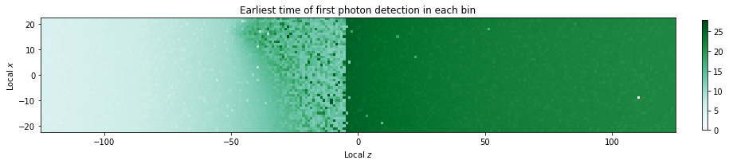
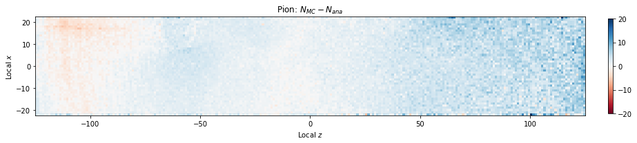
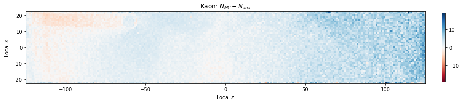
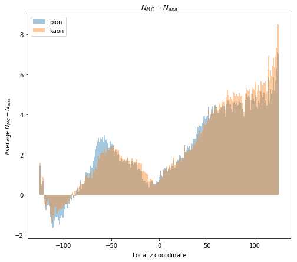

I remade the plot from yesterday of the earliest photon detection in each bin with more data. Here's the plot.
A bit cleaner, but we see a weird discontinuity just a little before z = 0, and the region between z = -50 and 0 is still quite rough.
I began investigating how the number of digits we detect via Monte Carlo compares to the analytic model's expected number (as a function of incident position). Here's what I found:
  We see that for the majority of the bar, we are simulating too many photon detections, by usually five or less. This implies to me that the cuts we make on the digits we simulate are getting pretty close to approximating the analytic model's expected number of digits, but there is still some refinement that needs to be made. These plots are shown with a tolerance of 0.02 radians on the Cherenkov angle cut, so our first plan is to investigate what a tolerance of 0.01 radians will do to these plots. See that in tomorrow's blog post.
I began working on building a framework for extracting the analytic PDFs from BASF2. In my notebook AnalyticLikelihoods.ipynb, I built a PDF class that easily maintains the PDF's information and provides some plotting methods. Here's what some of the analytic PDFs look like.
From the second image, it looks like perhaps we are cutting off the "zig zag" shapes a bit. As such, we are going to look into writing out more peaks from the analytic PDFs. See tomorrow's post for that.
Another interesting thing. I decided to calculate the overall normalizations of the full module PDFs, and found them to be
norm of pdf 0: 7.47
norm of pdf 1: 6.78
norm of pdf 2: 5.60
norm of pdf 3: 0.94
norm of pdf 4: 0.88
norm of pdf 5: 8.04
norm of pdf 6: 10.08
norm of pdf 7: 8.58
norm of pdf 8: 23.89
norm of pdf 9: 6.17
We expect them to be at least 20 in most cases, though, so something is wrong with our translation of the mean, width, and area to Gaussian shapes. In some other parts of the code, the value width is used as though it is actually representing the width squared. Thus, I added a line width = np.sqrt(width) and recalculated the norms, and it appears to have helped.
norm of pdf 0: 10.86
norm of pdf 1: 6.78
norm of pdf 2: 14.70
norm of pdf 3: 18.91
norm of pdf 4: 13.61
norm of pdf 5: 11.96
norm of pdf 6: 10.08
norm of pdf 7: 8.62
norm of pdf 8: 23.89
norm of pdf 9: 16.37
Most of these are more in line with our expectations, now. As such, I'm going to default to taking the square root of the peak's width from now on.